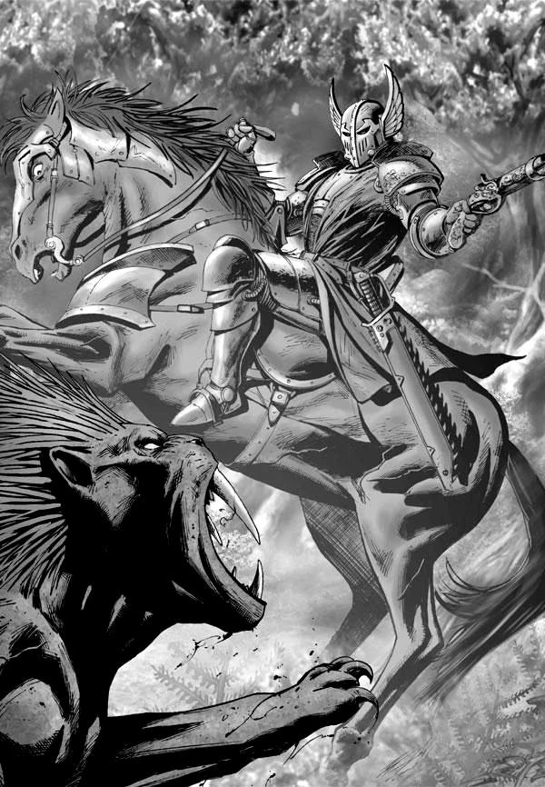

Feudal world
| Feudal world | |
|---|---|
| Class of Imperial world | |
 A walled city of a feudal world, from an early Administratum survey plate | |
| Administratum class | Feudal world[a] |
| Typical tithe | Solutio grades, paid in goods, recruits or levies |
| Population | Millions to hundreds of millions |
| Technology | Pre-industrial: iron, steel, sail and sometimes black powder |
| Ruler | A king, emperor or council of lords acting as planetary governor |
| Examples | Caliban (destroyed M31), Colchis, Chogoris (variously recorded), Knight worlds |
A feudal world is a class of planet of the Imperium of Mankind whose people live in pre-industrial societies of kingdoms, lordships and peasant villages. They farm, build with stone and timber, fight with swords, spears and sometimes black powder, and are ruled by hereditary nobles bound to one another by oaths of service. Most feudal worlds were once more advanced, and fell back to this condition during the Age of Strife.[1][2]
The Administratum generally keeps feudal worlds as they are. Their tithes are small and their technology poses no danger, while their people are hardy, disciplined and used to war. Several of the primarchs were raised on feudal worlds, and Space Marine Chapters and the Astra Militarum recruit from them. A special form, the Knight world, is ruled by noble houses that pilot the war machines called Imperial Knights.[3][4]
Characteristics
[edit]A feudal world differs from a feral world in having settled agriculture, towns, castles and organised states. It differs from a civilised world in lacking industry. The ruler of the world, or the strongest of its kings, is usually recognised by the Imperium as planetary governor and is responsible for the tithe. Most of the population knows little or nothing of the wider Imperium beyond the Imperial Cult, which is often preached in a local form, and the occasional arrival of off-world ships.[2][5]
Imperial law generally forbids the trade of advanced technology to feudal peoples, and governors keep a small enclave, such as a starport or a fortress, where Imperial technology is held. Local wars between kingdoms are common, and the Imperium seldom intervenes unless the tithe is threatened.[1]

Relations with the Imperium
[edit]Feudal worlds pay light tithes, usually in the lower Solutio grades, which are delivered as food, raw materials or levies of soldiers. The Departmento Munitorum values feudal recruits for their discipline and courage, though they must first be taught to use Imperial weapons. Some feudal worlds furnish regiments for generations and come to see the service as part of their nobility's honour.[6]
Space Marine Chapters often recruit from feudal worlds. The Codex Astartes regards them, with feral and death worlds, as good recruiting grounds, since their warriors are tested in battle from youth. Some Chapters intervene in feudal politics; others watch from orbit and take only the champions of their tournaments and wars.[4]
Notable feudal worlds
[edit]| World | Notes |
|---|---|
| Caliban | Forest world of knightly orders who hunted its great beasts; homeworld of Lion El'Jonson; destroyed at the end of the Horus Heresy (c. 014.M31) |
| Colchis | Theocratic world of the Covenant where Lorgar was raised; homeworld of the Word Bearers until the Heresy |
| Chogoris | Recorded as feudal and as feral; where Jaghatai Khan was found in 865.M30 |
| Alaric Prime | Knight world of House Terryn |
Uplift and change
[edit]A feudal world does not always remain so. Some have been industrialised by order of the Imperium when their resources were needed, and reclassified as civilised or mining worlds. Others have been changed by contact with off-world traders or by the arrival of Imperial forces in war. The Administratum regards such change with caution, since it may unsettle the local order and the tithe, and prefers to leave a feudal world as it is unless there is good reason to alter it.[2]
History
[edit]Most feudal worlds were settled in the Dark Age of Technology and regressed when interstellar contact failed in the Age of Strife. During the Great Crusade (c. 798.M30–005.M31) many were brought to compliance with little resistance, and their rulers confirmed as governors. Since the opening of the Great Rift in 999.M41, feudal worlds in the Imperium Nihilus have been left largely to defend themselves, and many are known to have fallen to raiders or heresy.[3][7]
Society
[edit]Society on a feudal world is ordered by birth. At its head stand kings, princes or high lords, below them a warrior nobility who hold land in return for service, and below them the great mass of peasants, craftsmen and townsfolk. Oaths of fealty bind each rank to the one above, and honour and lineage are prized. Codes of chivalry are common, and many feudal worlds hold tournaments, duels and trials of champions. The church of the Imperial Cult, where established, is often bound into the feudal order, its priests acting as advisers to the lords. On worlds such as Caliban, orders of knights dedicated to particular causes formed a separate power beside the kings.[3][5]
Timeline
[edit]| Date | Event |
|---|---|
| Age of Strife | Feudal orders replace the colonial governments of many worlds cut off by Warp storms.[b] |
| Late M30 | The Great Crusade brings feudal worlds into the Imperium, and their lords swear fealty to the Emperor of Mankind.[c] |
| M31 | The Horus Heresy divides feudal lords, whose oaths of fealty are tested by the war.[d] |
| M32–M36 | The Imperial Cult is bound into the feudal order, and priests advise the lords.[e] |
| M38–M41 | Feudal worlds are raided by Chaos warbands and by the Orks during the Waning.[f] |
| Early M42 | Feudal worlds remain under their noble houses and the Imperium's Indomitus Crusade calls their lords to war. |
See also
[edit]Notes
[edit]References
[edit]- ^ a b Codex Imperialis (rev. 980.M41). Adeptus Terra.
- ^ a b c Administratum (rev. 997.M41). Liber Classificatus Mundi: Registry of the Worlds of Man. Administratum Archive, Terra.
- ^ a b c Liber Primarchus (M32, revised M41). Administratum Archive, Terra.
- ^ a b Guilliman, Roboute (c. 019.M31). Codex Astartes. Macragge.
- ^ a b Liber Ecclesiasticus (M37). Adeptus Ministorum.
- ^ Imperial Infantryman's Uplifting Primer (rev. 990.M41). Departmento Munitorum.
- ^ Records of the Indomitus Crusade (ongoing). Office of the Lord Commander.